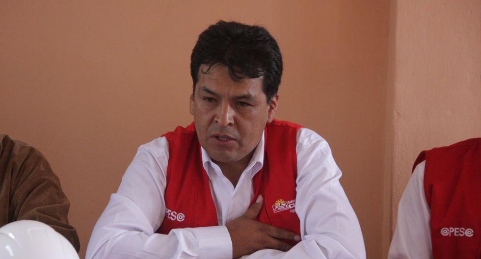
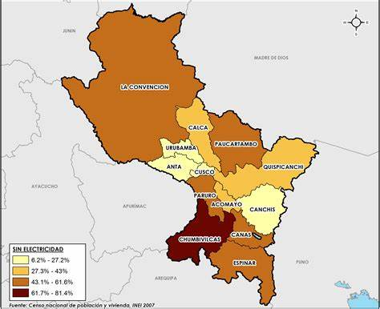

HISTORIA
Cuzco, oficial y legalmente Cusco, es una ciudad del sureste del Perú ubicada en la vertiente oriental de la cordillera de los Andes, en la cuenca del río Huatanay, afluente del Vilcanota. Es la capital del departamento del Cusco y, además, según está declarado en la Constitución peruana, es la «capital histórica» del país
ESCUDO

GOBERNADOR REGIONAL
Jean Paul Benavente
MAPA DEL DEPARTAMENTO
 mapa del año 2010PROVINCIAS DE Cusco
lAS PROVINCIAS SON:
La convención
Calca
Valle sagrado
Urubamba
-
LOS DISTRITOS SON:
- prueba 1
- prueba 2
-
provincias
- Urubamba
- calca